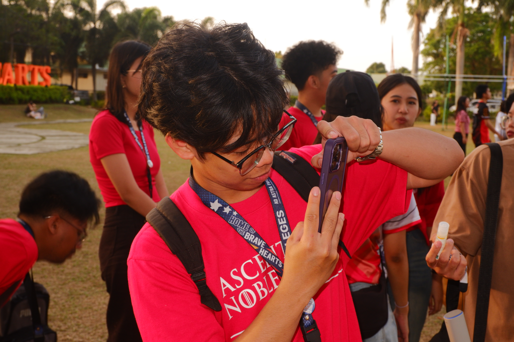

Imageassets/looking-forward/portrait.jpgThis subject has taught me not just about creativity and art, but how to look at it in a critical and personal way. It shaped my perspective and pushed me to be more appreciative of art. It would be an understatement to say that this course was eye-opening in terms of my understanding and appreciation of art.
This course also helped me have a creative outlet and an opportunity to explore different artistic mediums that I have never had before. Given that these experiences have been so enriching, I wanted to apply those lessons to recreating and exploring art forms I had experience in before.
Art appreciation helped me to develop a deeper connection with art and myself, helping me become a more thoughtful and reflective person.
In the following years, I hope to always have hope in life, looking at it through the lens of an artist whose life is colored by both light and dark hues. I hope to become a person appreciative of art, and understanding the depths of the human experience through artistic expression.
Words cannot begin to describe the impact this course has had on my life and my perspective on art. I am thankful for this experience.
Liam Paul Raboy